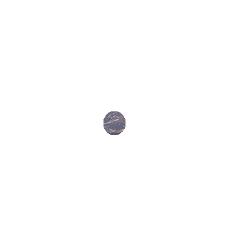
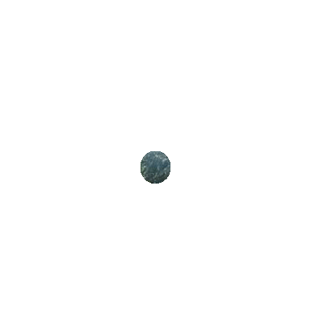
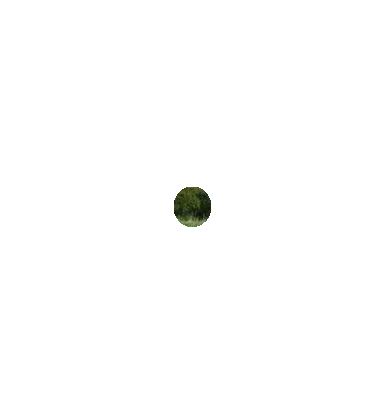
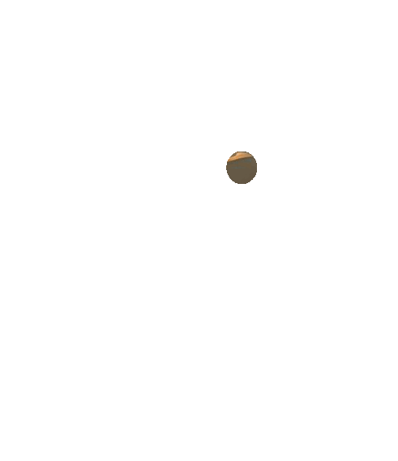
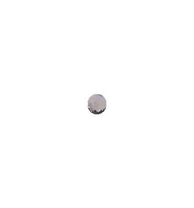
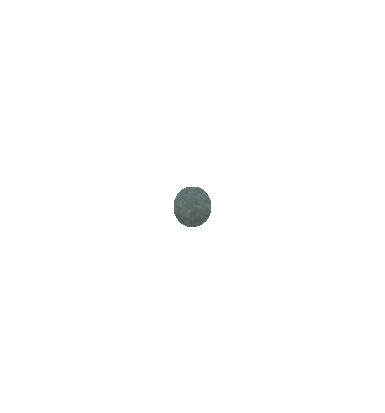
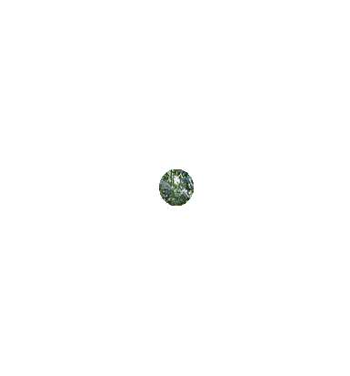

Esta región natural se caracteriza por tener inviernos muy fríos con pocas precipitaciones y veranos templados pero lluviosos. temperaturas de hasta -50° bajo cero.

Esta región se caracteriza por veranos cálidos e inviernos templados. Las lluvias son escasas durante el año presentando una máxima concentración en invierno. Recibe influencia del Océano Atlántico.

Esta región se caracteriza por tener lluvias irregulares, temperaturas suaves en invierno y cálidas en verano. Se encuentra en las costas penínsulares de Anatolia, Siria y Palestina.

En esta región las lluvias o precipitaciones son escasas. Se da en oriente próximo, la península Arábiga, Irán y parte de Asia central. En algunas zonas altas el clima de los desiertos como el desierto de Gobi puede ser frío pero muy escaso de lluvias.

Es una región caracterizada por bajas temperaturas en zonas de altas montañas y mesetas. Fuertes, secos y frìos vientos.

El desplazamiento de las masas de aire desde el océano hasta el continente en verano y en sentido contrario en el invierno, ocasionan las lluvias estacionales y producen humedad que favorece enormemente las zonas destinadas para los cultivos.

Es un clima cálido acompañado de abundantes lluvias que se extienden por el sudeste asiático e insular